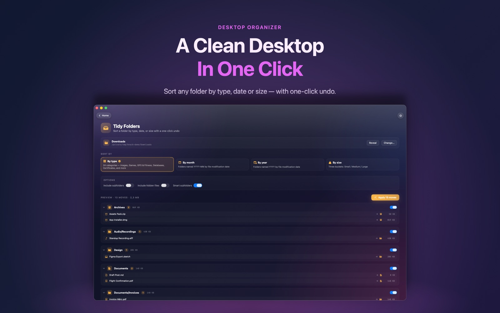

Hundreds of installers, screenshots and PDFs? Tidy Folders sorts them into tidy sub-folders — and you can undo it with one click.

Not if you turn on 'Leave existing folders untouched'. Only loose files are moved.
No. Tidy Folders runs when you click Apply, so nothing moves without you seeing it first.
Tidy Folders is part of Knack Pro, a one-time purchase.
Tidy Folders is one of more than twenty native tools in Knack — converters, PDF tools, OCR, AI photo tools and more, all running on your Mac.
Get Knack